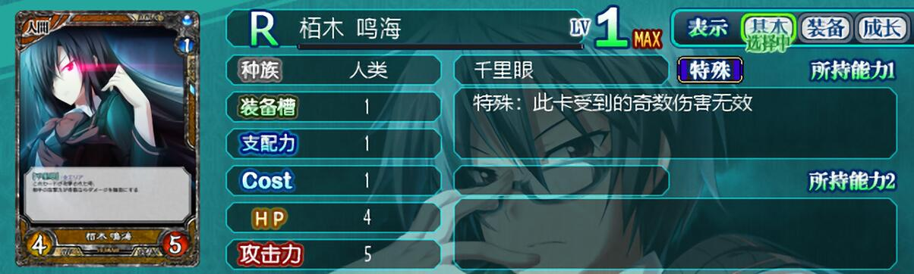

刚打完全CG收集，这游戏我从19年玩到24年，实在是太累了。
基本框架都来自于前人，剧情选项反正都不讲了，看上面的超链接就行，有新版的攻略本见贴吧，点击跳转。本页面超链接中的内容以下简称为“攻略本”。
给新手看的，起码对这些卡片有点印象。
简单粗暴的1费3血7攻身材，需要注意的是自动战斗不会使用技能，开局就能复制，中期这个面板就不够看了。
天使线能较早获取，人类线获取要晚一点，在MHI大楼里出现。简单粗暴的低阶同步，无机/怪物属性能吃满流卡系列的BUFF。
简单粗暴的机制，可以配合美来的操血修攻击面板，但是亲睦任务里哥哥的超再生和偶数攻导致不能逃课。
强度特别高值得拿出来提的就这三个，一周目组卡剩下的凑数位置建议从美来、梅西夏、鸣海、鸦鸟里面选，一周目本质随从交换游戏，选单卡质量高的准没错。
菜刀卡唯一真神，拿到三张之前每拿一张都有提升，天使线限定，每周目只能获取一张。具体用法不解释了。
这两张通常一起使用，死歌控场保证改札不至于被一轮集火死，改札依靠超再生赖场并每回合造成aoe伤害清场。
后期获取带“城壁展开”技能的道具后死歌可配合提供幻觉技能的卡片，如“磁粒的牛魔”、“迎击士兵MG08E”、“冥府的坦古萨玛”和5C黑E娘以及6C智天使伽诺艾露，具体用法见“攻略本”第六章“城壁+幻觉+死歌”部分。
凡是一周目基本可以认为拿不到的卡片都在这里，包括角色结局给的6C卡和外传卡片(外传0周目直接硬打当然可以，但是太折磨了，从游戏体验我建议是要么一周目走人类线沙夜音入队凑齐能逃课的卡去外传，要么就三周目打完梦境再去外传)。
其实除了梅西夏都没太大用，6C还是贵了点，梅西夏基本都还是绑了COST-1指环的。夏妮露的看着很唬人但是也就那样，能拉的怪物卡只有“磁粒的牛魔”和“冥府的坦古萨玛”这两个幻觉卡有用，但是我补了幻觉就等于无敌了，不需要治疗，而且我只需要5C甚至3C，为什么要上6C卡还得丢另一个夏妮露去检索？改札打完一周目也乏力了，也不好上。
本质是一个快速时间启动器，广泛用于各类OTK卡组作为润滑部件。看似没什么大作用，战斗阶段不能下怪，只不过是从行动阶段后额外加一个移动阶段而已。但首先是给一个额外的行动阶段，两张6C魔王大人补一个6C梅西夏就可以四连邪神招聘直接OTK没有不屈的精神的任意BOSS；其次是给一个额外的移动阶段加速铺场，用于3骨宫之命OTK卡组。
前几个周目补伤害的时候可以用一下，打40%伤害的6C获羽红丽亚在攻略最后一个女主的时候才能获得，早就退环境了。
解决了1031一个卡组里只能带4张的大问题。虽然没有高贵的无机属性吃不到流卡BUFF，也不能被“观察能力”等技能拉回来。
简单粗暴的挖坟属性，天使那边也有一个类似的卡“大天使艾尔米尔”。
无机同样有挖坟卡“磁流精特丽尼西亚”，但是这卡自带的是怪物属性，不能自己拉自己。
老赛一般是没法直接拉出来的，都是5C海谢拉特招所以放一起了。用法很简单，老塞拉出来之后在老塞头顶按一下右键就清净了。
OTK卡组用。
这三个(以及未列出的白板1C美来)绑定。等价于1C2牌招一个3支配杆子，常见于各类OTK卡组。通关外传并且Party Rank要求比较高。
大号骨宫之命，名字是骨宫之命最后的ミコト换成了コトハ，不是很懂日本神名字怎么翻的，不知道对应哪些汉字，以下以大号骨宫之命简称。7C还是太笨重了，不如5C的好用，用于没有三张骨宫之命的时候。
| 领队：魔王大人 | 1C白板美来 | 6C梅西夏 | 6C魔王大人*2 | 啾、啾、美来。 | 任意2C以下1支配以上，补“神圣的治愈” |
| “姬狩队伍”提供1支配 | 红白帽 | 史特鲁拉指环L | 史特鲁拉指环L | 贞操带 | 凑数的，可用青史莱姆自清 |
| “强制归还”技能给空位 | 拉啾啾美来用 | COST-1 | COST-1 | 3支配杆子 | 强迫症可用“神官佩提涅妮”，回8。 |
用法：领队横移，下凑数单位，后中位置下白板美来，特招啾啾美来，领队技能凑数单位，下两个6C魔王大人，6C魔王大人技能，空位中3支配格处下凑数单位，最后空位下6C梅西夏，再次发动6C魔王大人技能，踢脸。
| 领队：魔王大人 | 6C梅西夏 | 天使德罗艾尔 | 1C白板美来 | 啾、啾、美来。 | 骨宫之命*2 | 大号骨宫之命 |
| 强制归还工具人 | 史特鲁拉指环L | 茄剑/玻璃灰皿 | 红白帽 | 贞操带 | 茄剑/玻璃灰皿 | 茄剑/玻璃灰皿 |
| 领队不带攻击装备本套斩杀线241 | COST-1 | 给攻击BUFF并且补攻击 | 拉啾啾美来用 | 3支配杆子 | 至少有一个不带茄剑 | 面板高点 |
用法：伽诺艾露领队/伙伴触发被动“世界创造”起手多一牌可OTK，否则需脸接一轮；本描述中可对称摆，不影响。领队下移，前中位置下天使德罗艾尔，左前位置下1C白板美来，特招啾啾美来，德罗艾尔技能啾啾美来，领队技能德罗艾尔，左后位置下任意装备骨宫之命，右后位置下德罗艾尔，德罗艾尔技能骨宫之命，骨宫之命技能，前中位置下6C梅西夏，梅西夏、啾啾美来、领队均右移一格(领队将德罗艾尔覆盖)，后中位置下大号骨宫之命，啾啾美来技能，大号骨宫之命技能，最后的空位下不带茄剑的骨宫之命，可行动的骨宫之命技能，踢脸。
若敌人先手有2支配及以上的单位可被复写镜，则用以下这套改版OTK:
| 领队：2支配 | 6C梅西夏 | 天使德罗艾尔 | 2C梅西夏 | 骨宫之命*2 | 大号骨宫之命 |
| 若有“光之拘束结界”，需魔王大人强制归还 | 史特鲁拉指环R | 复写镜 | 复写镜 | 茄剑/玻璃灰皿 | 茄剑/玻璃灰皿 |
| 因为带复写镜，看对面面板 | 支配+1 | 给攻击BUFF并且补攻击 | 天使的楼梯工具人 | 至少有一个不带茄剑 | 面板高点 |
用法：摆法仍旧对称。领队右移，前中位置下德罗艾尔，左前位置下2C梅西夏，2C梅西夏技能德罗艾尔，德罗艾尔技能2C梅西夏，前中位置下6C梅西夏，2C梅西夏下移，德罗艾尔右移，领队下移覆盖德罗艾尔。后中位置下大号骨宫之命，大号骨宫之命技能，下任意装备骨宫之命，骨宫之命技能，下不带茄剑的骨宫之命，骨宫之命技能，踢脸。
另有一系列不同的基于骨宫之命的OTK卡组，在此不赘述。
5C魔王大人带赌博骰子对抽，然后5C海谢拉特招老赛，秒了。
怎么下5C卡参考上面。
变化比较多的是各种幻觉体系，但是在这里就不献丑了，讲一个典型的沙夜音卡组吧，玩懂了这个肯定懂幻觉体系了。
“幻觉”DEBUFF的效果是使卡片在进行移动之前无法攻击，同时移动的当回合幻觉效果依然存在，但可施放“幻觉”DEBUFF的技能均无法对领队生效，因此需要借助一些其他的手段来抵消领队的伤害，比如“城壁展开”或者双挖坟恶魔互拉等。一般敌人不会将已经在场的卡片覆盖，但为了保险一般需要补“诱惑的微笑”技能控制敌人的领队以免做好的场面给破解。
除了“丝绸头巾”，沙夜音还有专用装备“MHI电子控制器”也可提供“诱惑的微笑”技能。该卡组核心思路是通过将敌方所有单位均削到0COST后，下三个有“蓝玫瑰”技能并携带“诱惑的微笑”技能的沙夜音将死对面。
主要削COST手段是这三张卡。3C的建议带“虚假的白旗”过牌，退场削COST的可带压缩结界发生装置变为2C卡。1C一部分可带“继承的白旗”重复使用。
4C、6C沙夜音比较难下场，外传卡有“盛装恶魔妮露尼亚”也有个COST-2光环可选，但是不一定下得下去，容易卡手。
若使用魔王大人领队也可给1C沙夜音带“赌博骰子”回手减COST并过牌，总共有8张带“蓝玫瑰”的沙夜音，还是比较充裕的。
练卡片等级的时候可以适当塞个几张要练的卡进去。
没啥好讲的，全塞男主，装备拉满碾压过去就行。
也一样没啥好讲的，领队用魔王大人，带“姬狩队伍”技能的全带，再带几个“魔王军团长奥古”。1C莉莉有复生，“姬狩队伍”有额外1支配，不会缺支配的。
1031、光兽精拉满，剩下的位置补1C流卡系列。
只讲几个攻略里没提到的没啥用的东西，可能根本不需要这个也能打。
多周目竞技场几个限回合数的基本都需要“狙击手”去打，具体可以自己看攻略。
开场有两个身材很大的天使融合体与恶魔融合体，但如果直接下带“复写镜”的单位会复制最后的0攻1血身材的结界。可使用带“精气吸收”技能的卡如1C睡魔莉塔娜点掉该结界后，即可正常使用复写镜复制大型单位的身材。
“攻略本”第四章第二节有需要SL的两套卡组，第二套卡组可使用自带“后卫迎击”技能的“冥菲鲁王妃伊莉娜”领队，无需使用酸液攻击补强酸DEBUFF。即“丝绸头巾”1C红眼鸣海前中、1C人类攻2沙夜音左后右后、“数控眼镜”2C男主左前右前直接点自动就行。
真好玩，都去玩。
玩骨宫之命OTK卡组的大多目光呆滞思维迟钝。
玩城壁幻觉卡组的素质品味修养都很低。
玩蓝玫瑰沙夜音卡组的眼里只能看到COST。
玩1C低阶同步的、玩全姬狩或者全男主的都是只会按F8自动战斗的小脑萎缩选手。
玩6C魔王大人OTK卡组的都是见到“不屈的精神”直接打出GG的没了轮椅不会玩的残疾人。
真男人就该玩5C海谢拉特招神杀赛利卡，飞燕剑连舞一剑46，枢孔红燐剑一键清场。
以上内容纯属胡言乱语，一个字都不要信。